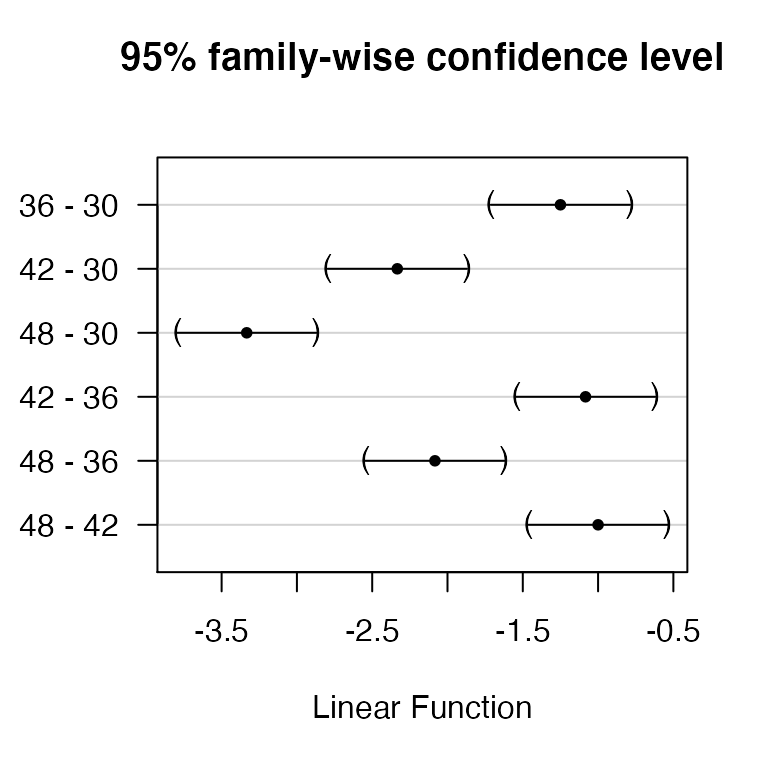

lab09_splitplot.RmdRemember from lecture that split-plot designs are used when we apply treatments to two experimental units: whole-units and sub-units
For example
Ag fields are sprayed with herbicides, and fertilizers are applied to plots within fields
Tenderizer is applied to roasts, and cooking times are applied to cores
In these cases, we’re interested in treatment effects at both levels
We can write the split plot model as:
\[\Large y_{ijk} = \mu + \alpha_i + \beta_j + \alpha \beta_{ij} + \gamma_k + \delta_{ik} + \epsilon_{ijk}\] The \(\alpha\)’s and \(\beta\)’s are fixed treatment effects. Note the interaction.
Because we want our inferences to apply to all whole units (e.g., roasts), \(\delta_{ik}\) is random. Specifically:
\[\Large \delta_{ik} \sim normal(0, \sigma^2_D)\]
We might view block (e.g. carcass) as random too:
\[\Large \gamma_k \sim normal(0, \sigma^2_C)\]
And as always,
\[\Large \epsilon_{ijk} \sim normal(0, \sigma^2)\]
library(FANR6750)
data("meatData")
str(meatData)
#> 'data.frame': 72 obs. of 5 variables:
#> $ Wbscore : num 8.25 7.5 4.25 3.5 7.25 6.25 3.5 3.5 6.5 4.5 ...
#> $ tenderizer: chr "C" "C" "C" "C" ...
#> $ time : int 30 36 42 48 30 36 42 48 30 36 ...
#> $ carcass : int 1 1 1 1 1 1 1 1 1 1 ...
#> $ roast : int 1 1 1 1 2 2 2 2 3 3 ...As we’ve done with other examples, we need to convert each predictor to a factor (in this case, converting to factors is necessary to use the mcp() function, later in the analysis):
meatData$time <- factor(meatData$time)
meatData$carcass <- factor(meatData$carcass)
meatData$roast <- factor(meatData$roast)
meatData$tenderizer <- factor(meatData$tenderizer)What does it mean to treat time as a factor? How would you interpret the results from a model that treated time as a continuous predictor vs a factor?
Notice that all the roast column does is enumerate the tenderizer × carcass combinations (which explains why the corresponding term in the additive model is \(\delta_{ik}\)):
head(meatData, n=10)
#> Wbscore tenderizer time carcass roast
#> 1 8.25 C 30 1 1
#> 2 7.50 C 36 1 1
#> 3 4.25 C 42 1 1
#> 4 3.50 C 48 1 1
#> 5 7.25 V 30 1 2
#> 6 6.25 V 36 1 2
#> 7 3.50 V 42 1 2
#> 8 3.50 V 48 1 2
#> 9 6.50 P 30 1 3
#> 10 4.50 P 36 1 3Only one Error() term allowed in aov(), so treat block effect as fixed:
aov.meat <- aov(Wbscore ~ tenderizer * time + carcass + Error(roast),
data = meatData)
summary(aov.meat)
#>
#> Error: roast
#> Df Sum Sq Mean Sq F value Pr(>F)
#> tenderizer 2 20.72 10.36 190.0 1.1e-08 ***
#> carcass 5 3.90 0.78 14.3 0.00028 ***
#> Residuals 10 0.55 0.05
#> ---
#> Signif. codes: 0 '***' 0.001 '**' 0.01 '*' 0.05 '.' 0.1 ' ' 1
#>
#> Error: Within
#> Df Sum Sq Mean Sq F value Pr(>F)
#> time 3 170.1 56.7 656.6 < 2e-16 ***
#> tenderizer:time 6 9.6 1.6 18.5 1.1e-10 ***
#> Residuals 45 3.9 0.1
#> ---
#> Signif. codes: 0 '***' 0.001 '**' 0.01 '*' 0.05 '.' 0.1 ' ' 1lme() instead of aov()
library(nlme)
lme.meat <- lme(Wbscore ~ tenderizer * time,
data = meatData,
correlation = corCompSymm(), # To make results same as aov()
random = ~1|carcass/roast)The first row of the ANOVA table is for the (Intercept) term, which we can ignore here (hence the [-1,] indexing operation):
anova(lme.meat)[-1,]
#> numDF denDF F-value p-value
#> tenderizer 2 10 190.0 <.0001
#> time 3 45 656.6 <.0001
#> tenderizer:time 6 45 18.5 <.0001Is the time effect significant for each level of tenderizer?
lme.meatP <- lme(Wbscore ~ time, data = meatData,
random = ~1|carcass/roast,
correlation = corCompSymm(),
subset = tenderizer=="P")
anova(lme.meatP, Terms = "time")
#> F-test for: time
#> numDF denDF F-value p-value
#> 1 3 15 126.7 <.0001
lme.meatV <- lme(Wbscore ~ time, data = meatData,
random = ~1|carcass/roast,
correlation = corCompSymm(),
subset = tenderizer=="V")
anova(lme.meatV, Terms = "time")
#> F-test for: time
#> numDF denDF F-value p-value
#> 1 3 15 274.7 <.0001
lme.meatC <- lme(Wbscore ~ time, data = meatData,
random = ~1|carcass/roast,
correlation = corCompSymm(),
subset = tenderizer=="C")
anova(lme.meatC, Terms = "time")
#> F-test for: time
#> numDF denDF F-value p-value
#> 1 3 15 305.7 <.0001Yes it is.
glht() (package multcomp)
library(multcomp)
mcP <- glht(lme.meatP, linfct = mcp(time="Tukey"))
summary(mcP)
#>
#> Simultaneous Tests for General Linear Hypotheses
#>
#> Multiple Comparisons of Means: Tukey Contrasts
#>
#>
#> Fit: lme.formula(fixed = Wbscore ~ time, data = meatData, random = ~1 |
#> carcass/roast, correlation = corCompSymm(), subset = tenderizer ==
#> "P")
#>
#> Linear Hypotheses:
#> Estimate Std. Error z value Pr(>|z|)
#> 36 - 30 == 0 -1.25 0.18 -6.94 <1e-05 ***
#> 42 - 30 == 0 -2.33 0.18 -12.96 <1e-05 ***
#> 48 - 30 == 0 -3.33 0.18 -18.52 <1e-05 ***
#> 42 - 36 == 0 -1.08 0.18 -6.02 <1e-05 ***
#> 48 - 36 == 0 -2.08 0.18 -11.57 <1e-05 ***
#> 48 - 42 == 0 -1.00 0.18 -5.55 <1e-05 ***
#> ---
#> Signif. codes: 0 '***' 0.001 '**' 0.01 '*' 0.05 '.' 0.1 ' ' 1
#> (Adjusted p values reported -- single-step method)We can also easily plot the differences between cooking times for “P” tenderizer (and for the other 2 levels of tenderizer as well)
plot(mcP)
Nested-and-crossed is same as split-plot, but without the block. For example:
Sweet potato yield is studied in response to (\(a=3\)) types of herbicide.
Each herbicide is applied to 5 fields
Each field is divided into 4 plots. Each plot is treated with one of (\(b=4\)) fertilizers.
The data can be accessed using:
Give the appropriate additive model (this will be slightly different than the one for the split-plot design, since there is no blocking). What are the associated null and alternative hypotheses?
Does the effect of herbicide depend on fertilizer?
Use Tukey’s test to determine which fertilizers differ
Put your answers in an R Markdown report. Your report should include:
A well-formatted ANOVA table (with caption); and
A publication-quality plot (or plots) of the estimated effect of herbicide and fertilizer on yield, including 95% confidence intervals. The figure should also have a descriptive caption and any aesthetics (color, line type, etc.) should be clearly defined.
You may format the report however you like but it should be well-organized, with relevant headers, plain text, and the elements described above.
As always:
Be sure the output type is set to: output: html_document
Title the document: title: "Lab 9 assignment"
Be sure to include your first and last name in the author section
Be sure to set echo = TRUE in all R chunks so we can see both your code and the output
Please upload both the html and .Rmd files when you submit your assignment
See the R Markdown reference sheet for help with creating R chunks, equations, tables, etc.